@MysticPoetry2304 - 06/06/2006
El ojo de las 12 lagrimas ¿Aquelarre, culto o secta?
Hola chicos!! Ya tenia tiempo que quiera hablarles sobre este, uno de mis temas favoritos en todo internet.
Se trata de la secta del ojo de las 12 lagrimas, una de las sectas/cultos más enigmaticos y antiguos en la tierra.
Conozco esta secta desde hace varios años, y a pesar de estar buscando constatemente información, es casi desconocida.
Asi que tome la desicion de recopilar toda la informacion que he encontrado y la expondre para todos ustedes.

Todo lo que conocemos sobre la secta es lo que se ha documentado desde el principio de la civilización. Si crees que sueno muy exagerado hechemos un vistazo a la historia.
La secta en pinturas rupestres
Podemos suponer que el origen de esta secta viene desde que los nomadas se acentaron en las orillas de los rios para, dando el paso a la agricultura. Esta "creencia" viene junto con el surgimiento de sedentarismo

Podemos ver sus constumbres como sepultar a sus difuntos con su signo que los caracterizaba. De ahí viene el origen de su nombre, el ojo que llora. Se desconoce el por que de este, pero se puede apreciar que desde el inicio de la civilización se usa.
El ojo que llora, una constante
Como dije arriba, el ojo fue un elemento que se empezó a usar desde el inicio, desconozco que signifique. probablemente la precencia de los ojos era muy importante para la supervivencia, aprender a detectar ojos depredadores para poder reaccionar, al igual que diferenciar los ojos de los depredadores de los nuestros
Aqui tenemos una reconstruccion del primer ojo
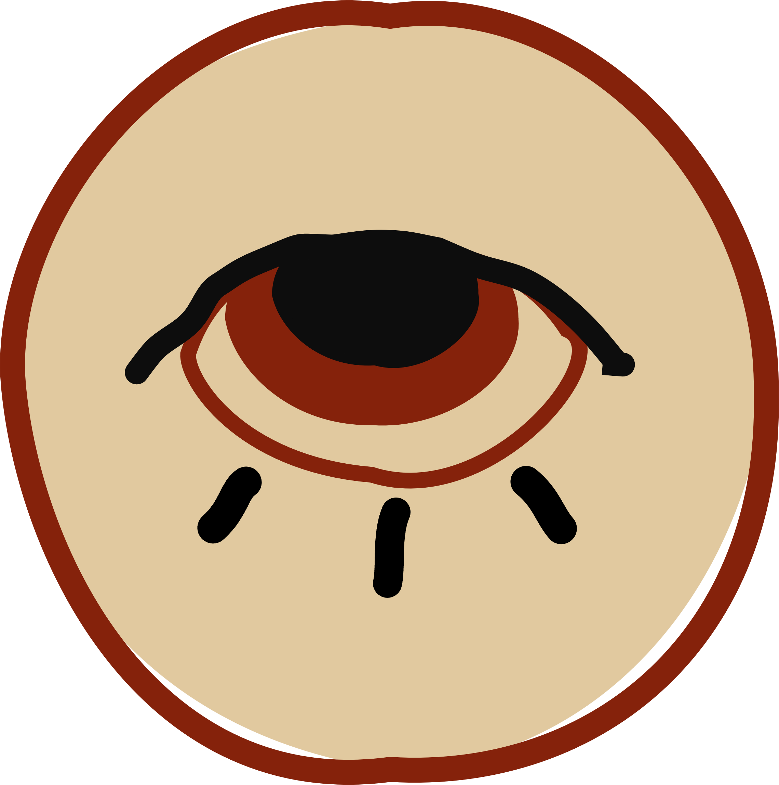
Podemos ver Colores primitivos de la epoca, probablemente los usados en piedra caliza y paredes rupestres.
Aqui tenemos otra prueba en una cueva, donde se puede apreciar que benravan este simbolo.
No conocemos mucho de sus constumbres, se sabe que solo los miembros más fuertes de la sociedad podian ser parte, tanto hombres como mujeres. Estos eran los que decidian el rumbo de la sociedad, eran sabios, tenian conocimiento sobre agricultura, ganaderia, astronomia, caza y recoleccion, y de comunicacion. Ellos decidian que era lo mejor para la sociedad, a donde ir y que hacer en caso de amenazas
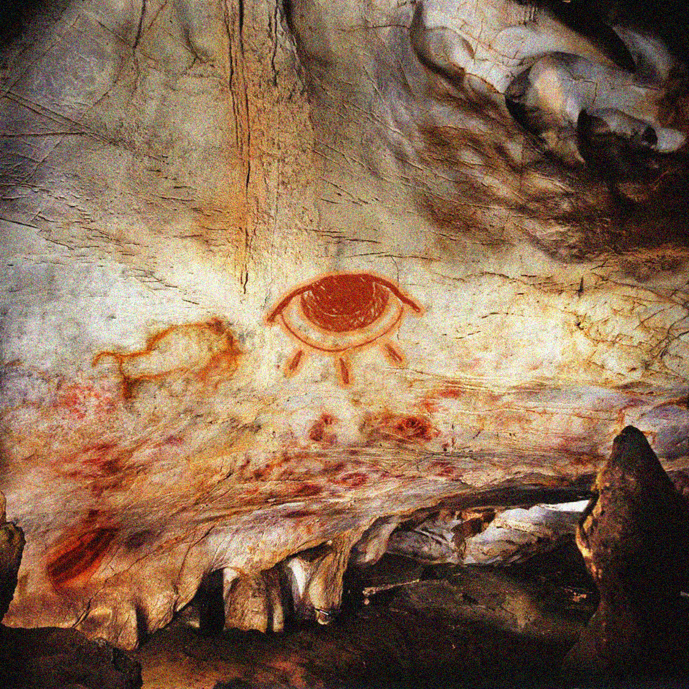
Mesopotamia: más allá de la religión
Uno de los descubrimientos más recientes son los encontrados en lo que fue mesopotamia, en asia medio oriente. Esta civilizacion se caracterizo por tener una fuerte precencia religionsa, con muchos dioses atribuidos a la naturaleza y sucesos sociales. tambien fue de las primeras civilizaciones en plazmar sus reglas y leyes en murales, para que los ciudadanos las conocieran y todos vivieran en armonia.
La sociedad mesopotámica estaba compuesta por diferentes ciudades-estado, como Sumer, Acadia, Babilonia y Asiria, cada una con su propio gobierno y estructura social. Estas ciudades-estado eran gobernadas por reyes o gobernantes que ejercían un poder centralizado. Además, existía una clase sacerdotal influyente que desempeñaba un papel importante en la vida religiosa y política.
La sociedad mesopotámica se organizaba en una jerarquía social estratificada. En la cúspide de la sociedad se encontraba el rey y la nobleza, seguidos por los sacerdotes, altos funcionarios gubernamentales y militares. Luego venían los comerciantes, artesanos y campesinos libres, mientras que en la base de la pirámide social se encontraban los esclavos, que eran considerados propiedad y trabajaban en la agricultura, construcción y otros sectores.
La religión desempeñaba un papel central en la vida mesopotámica. Creían en una amplia variedad de dioses y diosas, y los templos eran centros importantes de adoración y actividad social. Los mesopotámicos también desarrollaron un sistema legal y una serie de leyes codificadas, como el famoso Código de Hammurabi, que establecían reglas y castigos para diversos delitos.
|
Este símbolo tenía un significado profundo para los seguidores de esta secta y representaba tanto la sabiduría como la fortaleza.
El ojo lloroso simbolizaba la capacidad de ver y comprender más allá de lo evidente, de percibir los secretos y las verdades ocultas en el mundo. Los seguidores del culto creían que solo los individuos más sabios y fuertes tenían la capacidad de penetrar en los misterios divinos y acceder al conocimiento profundo.
La leyenda cuenta que aquellos que deseaban unirse a la secta debían someterse a rigurosas pruebas y demostrar su valía. Solo aquellos que superaban estos desafíos eran considerados dignos de ingresar en la hermandad del "Ojo de las 12 Lágrimas". Estos individuos se convertían en los guardianes de la sabiduría y se les confiaba el conocimiento secreto del culto.
El ojo que llora, además de su significado místico, también representaba la tristeza y el pesar que se encuentran en el corazón de los seres humanos. Los seguidores del culto creían que solo aquellos que habían experimentado y superado sus propias penas personales podían alcanzar la iluminación y convertirse en miembros de pleno derecho de la secta.
|

La importancia de la secta "El Ojo de las 12 Lágrimas" en la civilización mesopotámica estaría relacionada con su influencia en el ámbito religioso y espiritual. Podría haber tenido un impacto significativo en la forma en que las personas percibían la sabiduría y la búsqueda de conocimiento en la sociedad mesopotámica.
En primer lugar, la secta habría proporcionado un enfoque alternativo a la espiritualidad y la adoración de los dioses. Al centrarse en el ojo que llora como símbolo sagrado, la secta habría ofrecido una perspectiva única sobre la conexión entre la emoción, el sufrimiento y la sabiduría. Esta visión particular podría haber resonado con aquellos que buscaban una experiencia religiosa más personal y profunda.
Además, la secta habría tenido un impacto en el ámbito educativo y filosófico de la sociedad mesopotámica. Al enfatizar la importancia de la sabiduría y la fortaleza para obtener acceso al conocimiento oculto, la secta podría haber estimulado el interés por la educación y la búsqueda de la verdad. Los miembros de esta secta ficticia, considerados los más sabios y fuertes, podrían haberse convertido en líderes intelectuales y mentores en la comunidad, transmitiendo sus enseñanzas y contribuyendo al desarrollo intelectual de la civilización.
De vuelta al pasado: La mitica y misteriosa Asia oriental
La secta "El Ojo de las 12 Lágrimas" en la antigua civilización china y sus alrededores se consideraba una de las más misteriosas y poderosas de su tiempo. Adoptada en una época remota, se creía que esta secta tenía una conexión directa con los dioses y una profunda comprensión de los secretos del universo.

El símbolo sagrado de la secta era un ojo estilizado que llora lágrimas de cristal, representando tanto la sabiduría como la tristeza. Los seguidores creían que las lágrimas del ojo contenían un conocimiento oculto y un poder espiritual inmenso. Se decía que solo aquellos con una mente y un corazón puros podían apreciar y utilizar esta sabiduría divina.
La secta estaba arraigada en las tradiciones filosóficas y espirituales de la antigua China. Sus miembros se dedicaban a la meditación, el estudio de los textos sagrados y el dominio de las artes marciales. Se creía que la combinación de la sabiduría interior y la fortaleza física era crucial para alcanzar la iluminación y comprender el propósito del universo.
Los seguidores de la secta se reunían en templos secretos escondidos en las montañas, donde llevaban a cabo rituales y ceremonias en honor al ojo lloroso. Estos templos eran lugares de meditación profunda y entrenamiento espiritual, donde los discípulos aprendían a canalizar el poder de las lágrimas del ojo en su búsqueda de la verdad y la transcendencia.
La influencia de la secta se extendía a la sociedad, ya que sus miembros eran considerados asesores y guías espirituales para los gobernantes y eruditos de la época. Su conocimiento profundo y su conexión con los dioses les otorgaban un estatus de autoridad y respeto.
Sin embargo, la secta también enfrentaba desafíos y enemigos. Algunos grupos y figuras poderosas de la época veían a "El Ojo de las 12 Lágrimas" como una amenaza y trataban de suprimir su influencia. Esto llevó a enfrentamientos secretos y conspiraciones que pusieron a prueba la lealtad y la determinación de los seguidores de la secta.
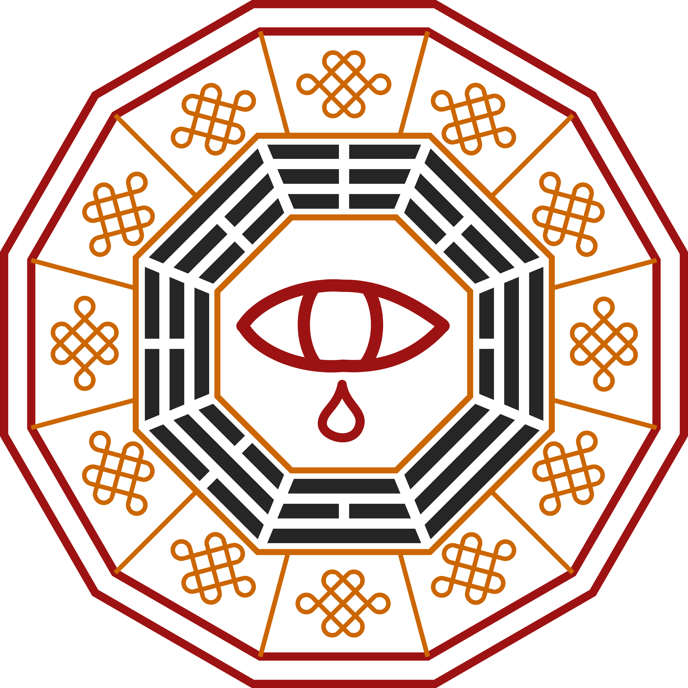
La relación entre la secta y el Tao en la antigua civilización china se basaba en la búsqueda de la armonía, la sabiduría y el equilibrio interior, principios fundamentales del taoísmo.
El taoísmo es una filosofía y tradición espiritual que se desarrolló en China y se basa en el concepto del Tao, que se puede traducir como "el camino" o "la forma". El Tao representa la fuerza primordial que fluye a través de todo el universo y está en equilibrio con la naturaleza.
En esta encontraba afinidad con los principios del Tao y buscaba alinearse con el flujo natural de las cosas. Sus seguidores creían que a través de la meditación, la introspección y el seguimiento de las enseñanzas del ojo lloroso, podían conectarse con el Tao y alcanzar un estado de armonía interna y externa.
Los miembros de la secta valoraban la simplicidad, la naturalidad y la espontaneidad, que son principios fundamentales del taoísmo. Buscaban cultivar una actitud de no resistencia y aceptación ante las circunstancias de la vida, siguiendo el flujo del Tao en lugar de tratar de controlarlo.
Además, el culto enfatizaba la importancia de la dualidad y la interconexión de las fuerzas opuestas en el universo, conceptos también presentes en la filosofía taoísta. Creían que el equilibrio entre el yin y el yang, los principios complementarios y contrastantes, era esencial para alcanzar la iluminación y la comprensión profunda.
La secta veía al Tao como un camino hacia la sabiduría, la auto-realización y la conexión con lo divino. Creían que el conocimiento transmitido a través del ojo lloroso estaba en armonía con los principios del Tao y podía guiarlos hacia una comprensión más profunda de sí mismos y del mundo que los rodeaba.
India: La consolidacion de los principios modernos de la secta
Aqui es cuando la secta cobra mayor fuerza y los principios aprendidos del pasado se mezclan y se consolidan los principios de la secta en la actualidad.
En la antigua India, la secta "El Ojo de las 12 Lágrimas" se consideraba una de las comunidades espirituales más enigmáticas y profundas de la época. Fundada en las tierras sagradas del subcontinente indio, esta secta estaba arraigada en las tradiciones y filosofías religiosas de la antigua India.
La secta "El Ojo de las 12 Lágrimas" estaba profundamente relacionada con las enseñanzas y los conceptos de la antigua India, especialmente con la filosofía del hinduismo y el budismo. Sus seguidores buscaban comprender la naturaleza de la existencia, la realidad suprema y la liberación del ciclo de nacimiento y muerte.
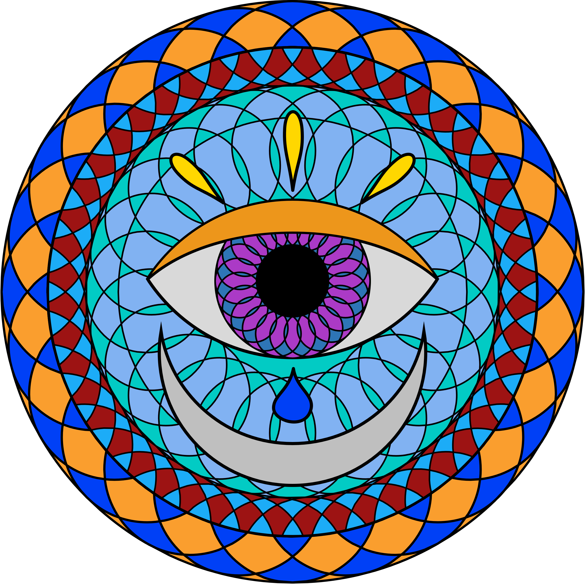
Los discípulos de la secta practicaban la meditación intensiva, la autodisciplina y el estudio de los antiguos textos sagrados. Creían en la importancia de desarrollar la comprensión de la mente y el espíritu para alcanzar la iluminación y liberarse del sufrimiento.
La secta tenía un enfoque especial en el karma y la reencarnación. Creían que cada lágrima del ojo simbolizaba una vida pasada y que a través de la contemplación de estas lágrimas, podían comprender las lecciones kármicas y el propósito de su existencia actual.
La secta también tenía una conexión profunda con la devoción y el servicio desinteresado. Los seguidores practicaban la caridad y ayudaban a los necesitados, creyendo que a través de la compasión y la bondad, podían purificar sus almas y acercarse a la divinidad.
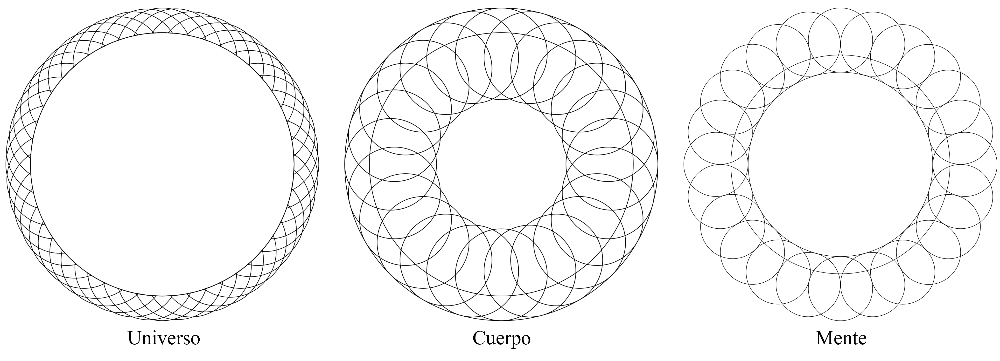
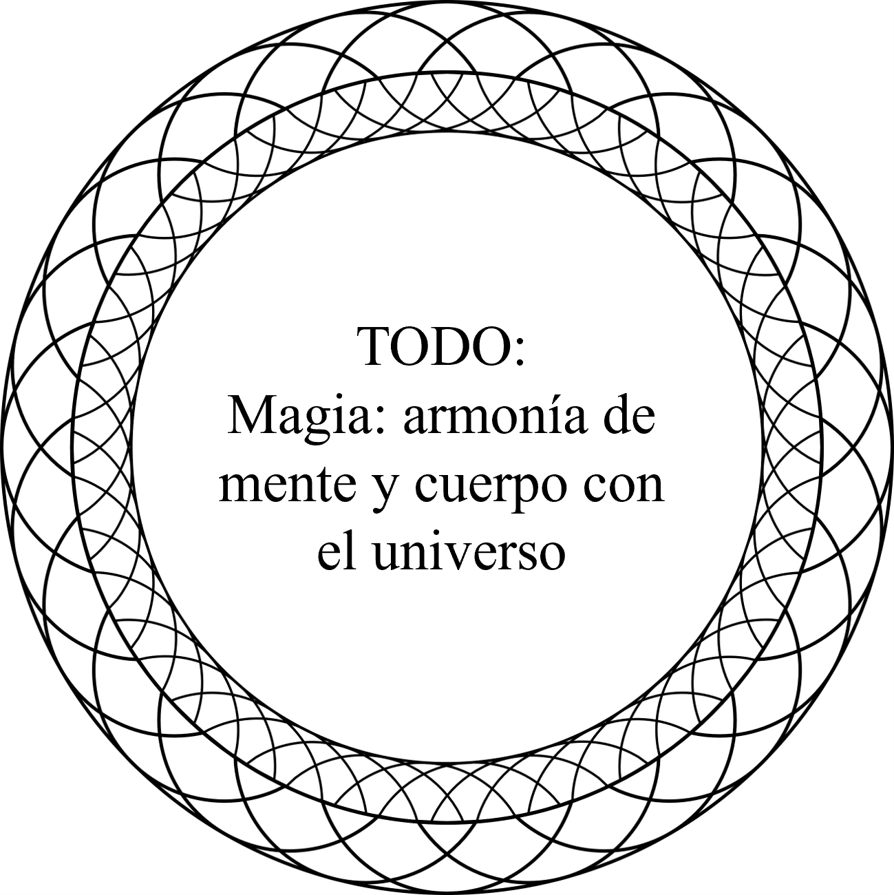
El símbolo sagrado de la secta era un ojo etéreo y brillante que derramaba lágrimas doradas. Este ojo representaba tanto la visión interior como la compasión. Se creía que aquellos que podían ver a través del velo de la ilusión y experimentar la compasión incondicional eran dignos de unirse a esta secta sagrada.
Los templos sagrados de la secta, ubicados en lugares de gran belleza natural, eran centros de adoración y enseñanza. Aquí, los miembros se reunían para realizar rituales, recibir enseñanzas espirituales y compartir experiencias sobre su camino hacia la iluminación.

Precencia pagana: la secta en europa
En las antiguas regiones paganas de Europa, la secta "El Ojo de las 12 Lágrimas" era considerada una misteriosa orden espiritual que desafiaba las tradiciones y creencias locales. Aunque su origen se encontraba en civilizaciones lejanas, los seguidores de esta secta lograron establecerse en las tierras paganas europeas y difundir sus enseñanzas.
La secta se adentró en las regiones paganas de Europa, donde se veneraban dioses y espíritus de la naturaleza. A pesar de las diferencias en las creencias, la secta "El Ojo de las 12 Lágrimas" encontró puntos de conexión con los aspectos espirituales y simbólicos presentes en estas culturas paganas.
El símbolo sagrado de la secta, el ojo lloroso, adquirió una nueva interpretación en este contexto. Los seguidores consideraban que las lágrimas del ojo representaban el dolor y la compasión asociados con la conexión humana con la naturaleza y los dioses. Creían que aquellos que podían ver y comprender el sufrimiento en el mundo tenían el potencial de alcanzar una comprensión más profunda de la vida y la espiritualidad.
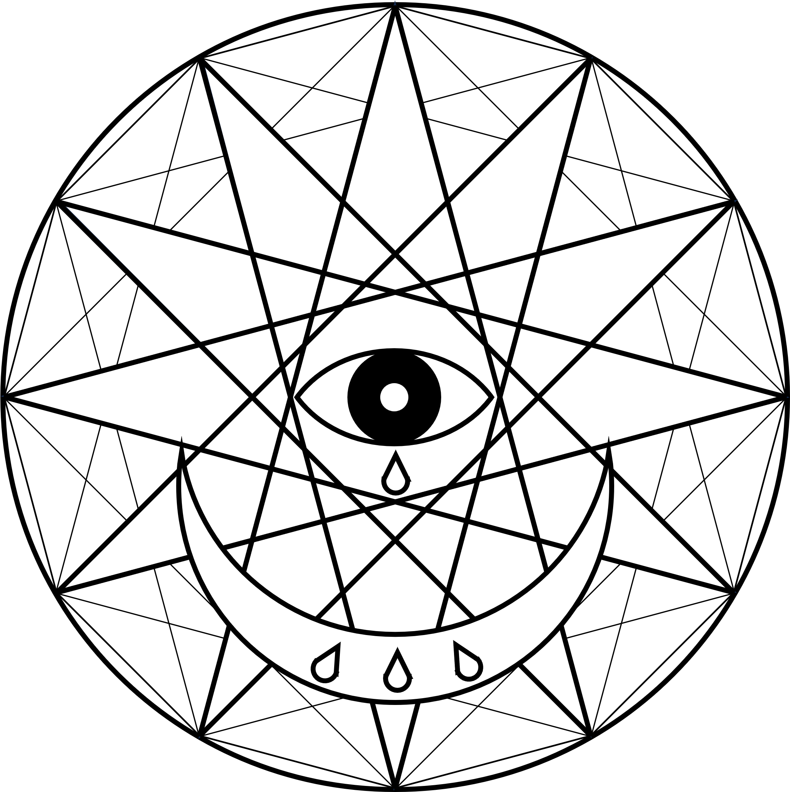
La secta no buscaba convertir a las personas al culto, sino más bien establecer una relación armoniosa y sincrética con las creencias locales. Los seguidores respetaban los rituales y las divinidades locales, mientras que compartían sus propias enseñanzas sobre la sabiduría, la compasión y la búsqueda de la iluminación.
La presencia de la secta en las regiones paganas de Europa generó tanto admiración como controversia. Algunos vieron en sus enseñanzas una perspectiva más profunda y espiritual, mientras que otros consideraron que se trataba de una influencia extranjera que amenazaba sus tradiciones y creencias.
A través de la interacción con las comunidades paganas locales, los seguidores de la secta compartían sus conocimientos y experiencias espirituales, y a su vez, aprendían de las prácticas y sabiduría locales. Esta intercambio enriqueció tanto a la secta como a las comunidades paganas, creando un ambiente de sincretismo y comprensión mutua.
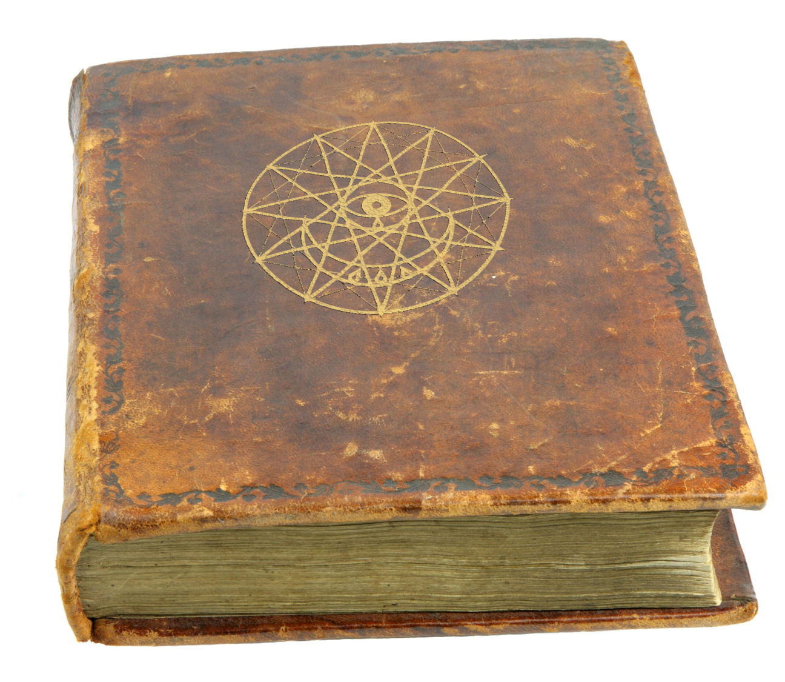
Los druidas, interpretaron la filosofía de la secta a través de su propio marco de creencias y conocimientos druídicos. Si bien no hay registros históricos que sutenten esto, podemos imaginar una posible interpretación druídica basada en sus valores y prácticas.
Los druidas creían en la interconexión de todas las cosas en el mundo natural y en la existencia de un plano espiritual que trascendía el mundo físico. Se centraban en el estudio de la naturaleza, la sabiduría ancestral y el cultivo de la armonía con el medio ambiente.
Dentro de esta perspectiva, los druidas interpretaron el símbolo del ojo lloroso como una representación simbólica de la tristeza y la compasión por el sufrimiento del mundo natural y humano. Podrían haber visto las lágrimas como una metáfora de la conexión emocional profunda y la empatía necesaria para comprender y sanar este sufrimiento.

Los druidas también enfatizaron la importancia de la sabiduría y el conocimiento en su práctica espiritual. Podrían haber interpretado la búsqueda de la iluminación y la comprensión profunda de la secta como una búsqueda paralela a su propio camino de conocimiento y conexión con la naturaleza y los dioses celtas.
Como mediadores entre los reinos espirituales y terrenales, los druidas podrían haber encontrado afinidad con la idea de que solo los más sabios y fuertes podían ingresar a la secta. Podrían haber interpretado esta cualidad de sabiduría y fortaleza como una virtud necesaria para desvelar los misterios del universo y servir como guías y consejeros para su comunidad.
El ojo que llora en la era medieval
Durante el proceso de conversión forzada al catolicismo en las tierras paganas, la secta "El Ojo de las 12 Lágrimas" habría enfrentado grandes desafíos para mantener su identidad y prácticas espirituales. Sin embargo, los seguidores de la secta, comprometidos con sus creencias y convicciones, habrían encontrado formas de adaptarse y preservar su tradición en secreto.
En un esfuerzo por sobrevivir, los miembros de la secta se hicieron parar por católicos y participaron en las prácticas públicas de la nueva religión dominante, ocultando así sus verdaderas creencias y rituales. Esto les permitiría evitar la persecución directa y mantener una apariencia de conformidad con las normas religiosas impuestas.

Además, la secta habría establecido reuniones clandestinas en lugares remotos o en la oscuridad de la noche, donde podrían continuar con sus rituales y enseñanzas secretas. Estas reuniones habrían sido cuidadosamente organizadas y limitadas a aquellos en quienes confiaban, asegurando así la continuidad de su comunidad y conocimientos espirituales.
La transmisión oral de las enseñanzas y el conocimiento habría sido fundamental para la supervivencia de la secta. Los seguidores habrían compartido sus tradiciones, historias y prácticas en secreto, pasándolas de generación en generación sin dejar registros escritos que pudieran ser descubiertos y utilizados en su contra.
Además, es posible que la secta haya adoptado ciertos aspectos del catolicismo para enmascarar aún más su verdadera identidad. Podrían haber fusionado elementos del catolicismo con sus propias creencias, creando una mezcla única y sincrética que les permitiera mantener su espiritualidad de forma encubierta.
Aunque la secta habría enfrentado grandes dificultades y riesgos durante la conquista católica, su determinación y adaptabilidad les habrían permitido sobrevivir en secreto, manteniendo viva su tradición y esperando tiempos más propicios para revelarse abiertamente.
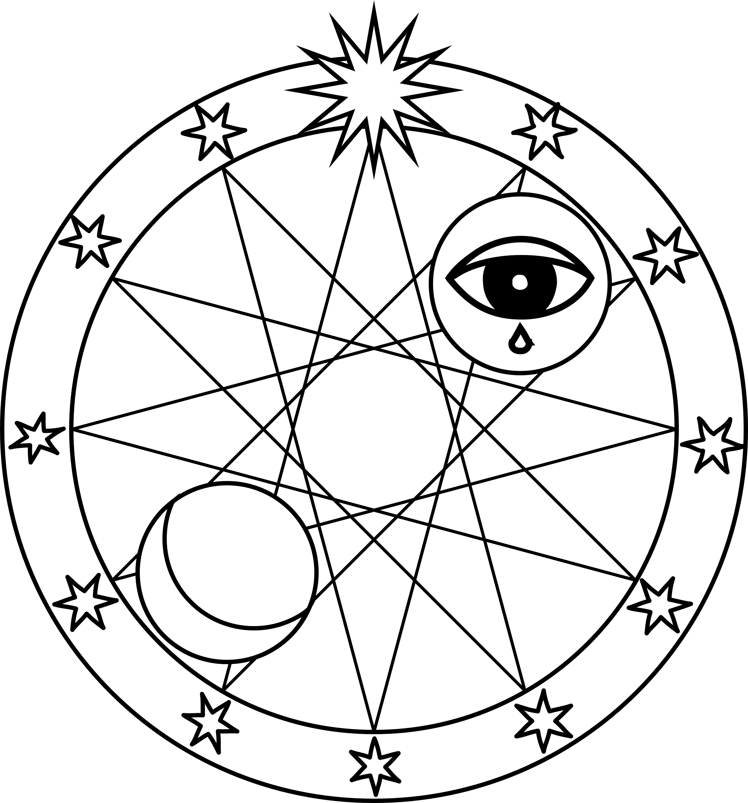
El ojo de las 12 lagrimas y los masones
Aunque suene dificil de creer, la secta tiene más poder de lo que creemos, a lo largo y ancho del mundo se ha savido adaptar y fucionar con todas las regiones y culturas del mundo.
la secta "El Ojo de las 12 Lágrimas" y la francmasonería comparten valores y objetivos similares relacionados con la búsqueda de la sabiduría, el conocimiento esotérico y la elevación espiritual. Ambos grupos valoran la filosofía, el simbolismo y el misterio como medios para el crecimiento personal y la comprensión del mundo.
La secta, con su enfoque en la compasión y la iluminación espiritual, podría haber llamado la atención de ciertos miembros de la francmasonería que compartían esos ideales. A medida que ambas organizaciones interactuaban y se conocían, se establecería una colaboración en la que los miembros de la secta se integrarían en logias masónicas existentes o incluso formarían sus propias logias específicas.
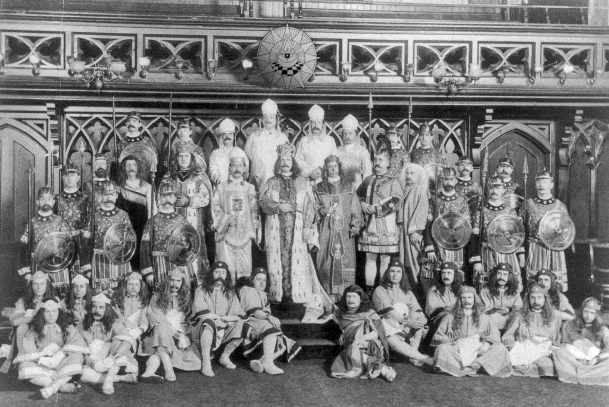
Dentro de la francmasonería, la secta encontraría un espacio para compartir sus enseñanzas esotéricas y místicas, así como para aprender de las tradiciones y conocimientos masónicos. Ambos grupos se beneficiarían mutuamente de esta interacción, enriqueciendo sus prácticas y perspectivas con nuevas ideas y enfoques.
La simbología sería un elemento importante en esta integración. La secta "El Ojo de las 12 Lágrimas" aportaría su propio simbolismo, como el ojo lloroso, a las prácticas masónicas existentes. Este símbolo adquiriría nuevos significados y se fusionaría con los símbolos masónicos existentes, creando una síntesis única y profunda de la iconografía y la filosofía.
Además, la secta aportaría su enfoque en la compasión y la conexión emocional con los demás, lo que podría influir en las enseñanzas y prácticas masónicas relacionadas con la fraternidad, la caridad y el servicio a la humanidad.
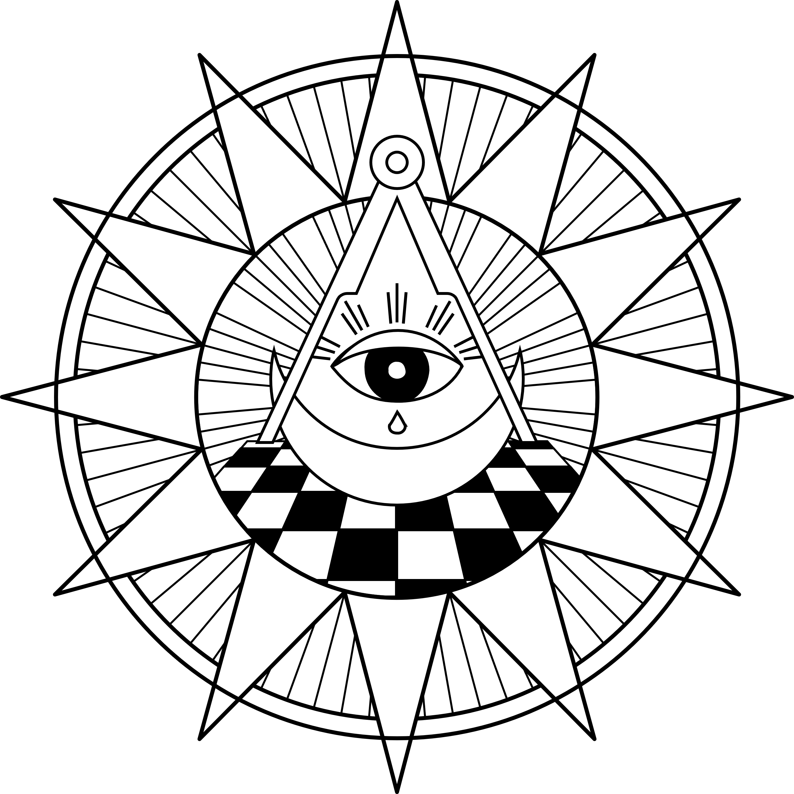